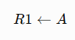
No caso da instrução ADD: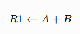
A sintaxe exata pode variar conforme a arquitetura do processador, mas essas expressões representam o funcionamento solicitado.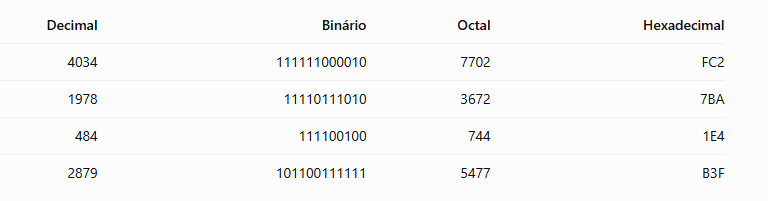
Exemplos dos cálculos: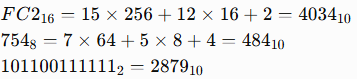
Para converter de binário para octal, agrupamos os bits de três em três. Para hexadecimal, agrupamos de quatro em quatro, completando com zeros à esquerda quando necessário.a) Expressão S₁ Considerando a expressão da imagem:
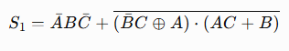
A tabela verdade é: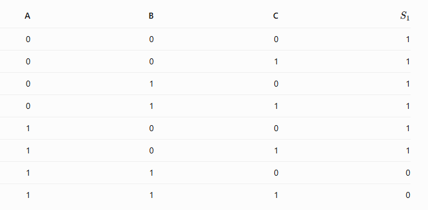
b) Expressão S_₂ Considerando a expressão da imagem: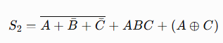
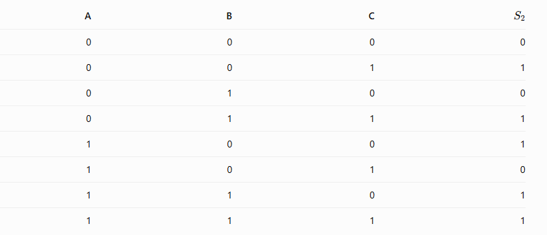
Legenda: a barra representa NOT (negação), o sinal + representa OR (OU), o ponto representa AND (E) e ⊕ representa XOR (OU exclusivo). Para montar os circuitos, utilize as portas NOT, AND, OR e XOR conforme a expressão, respeitando as negações indicadas pelas barras.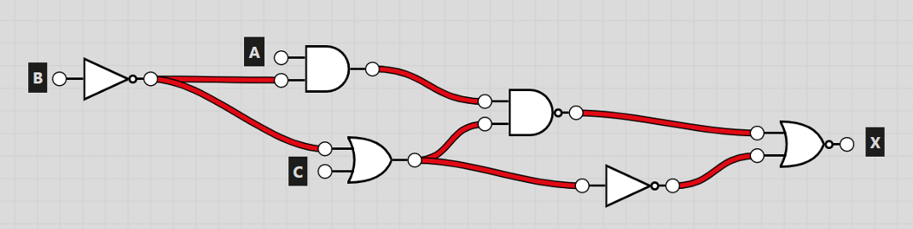
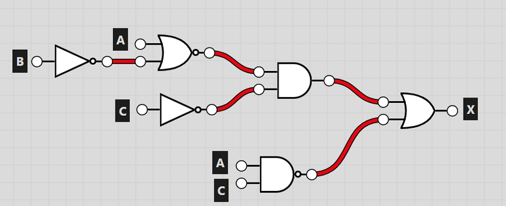
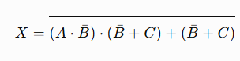
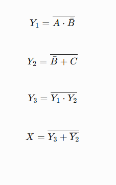
Tabela verdade: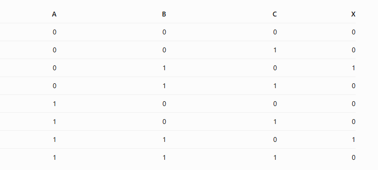
Conclusão: a análise dos circuitos lógicos permite transformar as portas em expressões booleanas e construir tabelas verdade para verificar o resultado de cada combinação de entradas.